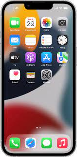

¿que es una aplicacion movil?
Las aplicaciones móviles son herramientas de software creadas en distintos lenguajes de programación para dispositivos como teléfonos inteligentes y tablets. También son conocidas como apps, por la abreviatura de la palabra aplication en inglés, y su principal característica es ser útiles, dinámicas y fáciles de instalar.

caracteristicas de aplicaciones moviles
Anteriormente hemos definido a las app como un programa instalable. Aún así éstas tienen unas características muy concretas:
- 1: Las apps están destinadas sobre todo a smartphones o tablets
- 2: Son más dinámicas que los programas.
- 3:Algunas dependen de internet, aunque no es una característica indespensable.
- 4:Ocupan menos espacio que los programas y son más rápidas de instalar
- 5:Cualquiera con ciertos conocimientos informáticos puede crear una app para android o iOS.
tipo de aplicacones moviles
existen 4 tipos de apliaciones moviles las cuales son:
Nativa:Se construye para una plataforma en específico (sea Android e iOS) con un lenguaje de programación determinado (Swift o Kotlin).
Tanto Apple como Android proporcionan herramientas, directrices y SDK para el desarrollo
Este tipo de apps se adaptan a sus respectivas plataformas
ejemplos
WhatsApp.
Facebook.
Twitter.
Netflix.
Spotify.
Pokemon Go.
Shazam.
Hibrida
Desarrollos que se construyen con una base única de código y se empaquetan en un contenedor nativo para acceder a ellas a través de las plataformas.
El mismo código base se usa para cualquier sistema operativo.o
Existen dos formas de crear una app híbrida:
1:Usando tecnologías web para después encapsularlas para cada plataforma
2:Empleado frameworks, como React Native
ejemplo de aplicaciones hibridas
Facebook.
Evernote.
Instagram.
WhatsApp.
Twitter.
Uber.
aplicaciones web
Es una adaptación de un sitio web construido para una mejor experiencia de navegación en comparación con una versión normal. La app web permite que el sitio sea responsivo y no es necesario descargarla e instalarla para hacer uso de ella.
Este tipo de apps se desarrollan con lenguajes de programación como HTML5, CSS, JavaScript, entre otras.
como ejemplo estarian
Netflix.
Canva.
Traductor de Google.
We Transfer.
iLovePDF.
Tiny PNG.
PWA
La aplicación web progresiva es un software de app que se comporta como una página web, pero se ve y comporta como una aplicación móvil normal-
Este tipo de apps se construyen con ciertos marcos como React.js, Angular.js o Vue.js.
Las PWA se ejecutan en el navegador y tienen URL’s, por lo que pueden encontrarse en la web
algunos ejemplos serian
Google Maps.
Google Drive.
Google Fotos.
Google Duo.
Uber.
Twitter.
Facebook.

impacto de las aplicaciones moviles en la actualidad
el impacto de las aplicaciones moviles en nuestra sociedad ha sido incriblemente amplio ya que todos usamos aplicaciones en nuestra vida diaria ya sea desde cosas tan sencillas como poner una alarma por las mañanas o algo mucho mas complejo como pedir un servicio de viaje a otro punto o inclusive cerar contratos importamtes desde la comodidad del celular cosas que hace pocos años eran imposibles de realizar sin estar de manera prescencial por lo cual el impacto qeu ha tenido en muchos es que nos ha echo sedentarios por decirlo de alguna manera pero esras ayudas han sido muy ventajosas para nosotros ya que con el dia a dia aprendemos cientos de cosas mediante una sencila app que podemos bajar en menos de 1 minuto estamos conectados a toda la red mundial y a u click de distancia de todo y de todos por eso pienso que el impacto de las aplicaciones moviles nos a dejado es bastante bueno